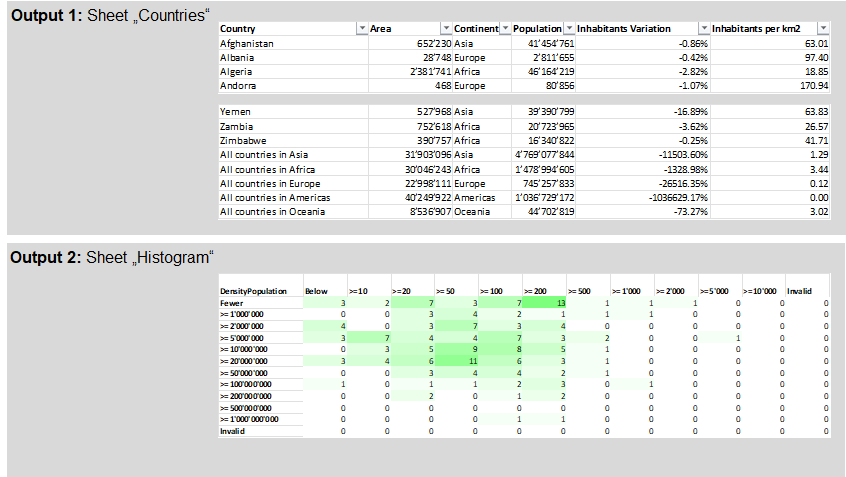

Overview
In a final step, save the tables in data formats needed, e.g. Excel, CSV, HTML, JSON and text files.
Sorting and Rearranging the Data
| table save() | Saves tables in text formats, CSV, HTML, JSON tables, etc. |
| table save excel file() | Save one or multiple tables in contemporary Excel format (.xlsx, .xlsm). |
| table save multiple() | Save multiple tables in legacy Excel format (Excel XML 2003) into one file. |
| variable save() | Saves a B4P variable tree in a JSON file |
| variable load() | This function loads JSON data into a variable. |
Wikipedia Example (continued from step 7)
Save as Excel file
- Save the country data and the histogram in one Excel file.
- The Excel file will contian two different sheets.
- The sheets contain the style and formatting as defined in the previous page.
Simple Example
table save excel file ( {c1, histo}, {Countries, Histogram}, "Images/Results.xlsx" );
All done.
Saved table(s) to EXCEL file 'Images/Results.xlsx' containing 2 sheets.
Viewing the Results:
Click on the file name download and open the file with Excel:
Results.xlsx
